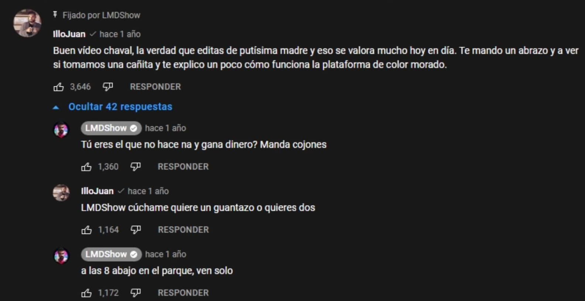

¿Quienes són?
Illojuan es un streamer español de la plataforma Twitch, que hace directos de todo tipo, desde jugar juegos hasta reaccionar a videos, clips o mmemes de todo tipo. Por otro lador, LMDshow fue un youtuber de éxito que hacía sketches de comedia con sus amigos y de vez en cuando hacía algun que otro gameplay.
Toda está rivalidad entre estos dos personajes públicos empezó cuando IlloJuan empezó a hablar mal de LMDshow en uno de sus vídeos, el qual no acabó muy bien para IlloJuan (según fuentes de Pavlo):
Personajes / Alteregos
elBokeron: ElBokeron o Andrés fue el mejor amigo de IlloJuan y actualmente de LMDshow, este, ayudo a IlloJuan a mantener la realidad entre los dos protagonistas de esta historia.

isaM: MariaIsabel o Masi es la actual novia de IlloJuan, y exnovia de LMDshow. En cambio, isaM (su otra personalidad) solo aparece cuando le va bien a Masi.
Existen varias investigaciones que afirman que isaM podría estar directamente implicada tanto en la desaparición de LMDshow como incubriendole del delito.

Guillem The Golem: Guillem the golem o Guille es amigo de IlloJuan pero más amigo de LMDshow (en secreto). El es la pieza clave para restaurar la realidad entre los protagonistas